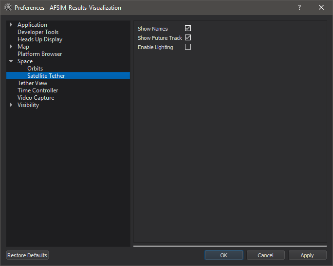

Satellite Tether View - Mystic¶
The satellite tether view is a tethered view that is only available on satellites. The display is graphically optimized for views from space and provides tools useful in this domain. Data is displayed in the RIC coordinate frame of the selected entity. In the RIC frame:
R - is the axis defined by a vector from the center of the earth to the platform’s location
C - is the axis defined by the angular momentum vector perpendicular to R
I - is the cross product of C and R
The view can be found by right clicking a platform with a spatial domain set to space and selecting Satellite Tether.
Preferences¶
Show Names - When this option is enabled, tracked platforms will display their names.
Show Future Tracks - When this option is enabled track-lines will draw their future data translucently. When disabled, future data will be hidden.
Enable Lighting - Enable the lighting of the terrain and models.
Platform History¶
Right clicking on the tether view provides access to platform history options.
Add/Remove Traceline - Displays the platforms trace-line history.
Add/Remove Wing Ribbon - Displays the platform’s wing-ribbon history.

WsfDraw¶
If there are visible draw layers, right clicking on the tether view provides access to a WsfDraw menu that controls the visibility of the different draw layers that have been specified. By default, all draw layers will be turned off.